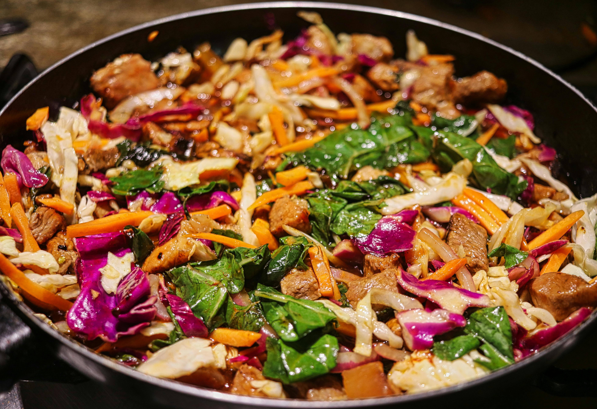

HOME
Chicken Stir-Fry

Ingredients
- 2 chicken breasts, sliced thinly
- 2 cups mixed vegetables (bell peppers, broccoli, carrots, etc.)
- 2 tbsp soy sauce
- 1 tbsp oyster sauce
- 1 tbsp hoisin sauce
- 1 tbsp vegetable oil
- 2 cloves garlic, minced
- Cooked rice, for serving
- 4 Chillies!
- Ginger
Instructions
- Heat the vegetable oil in a large pan or wok over medium-high heat.
- Add the garlic and cook for 1 minute until fragrant.
- Add the sliced chicken and cook until no longer pink.
- Add the mixed vegetables and cook until tender-crisp.
- Stir in the soy sauce, oyster sauce, and hoisin sauce. Cook for another 2 minutes.
- Serve over cooked rice.